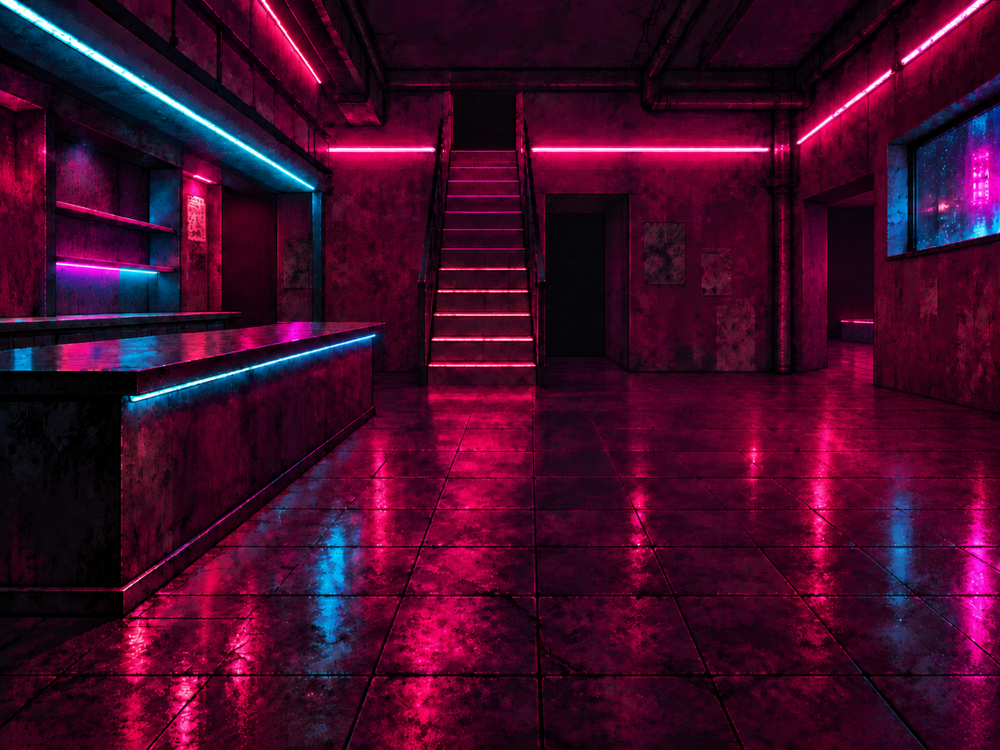
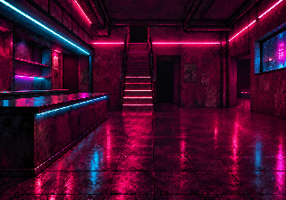
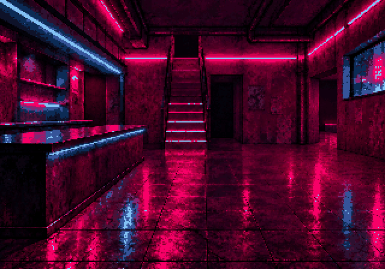
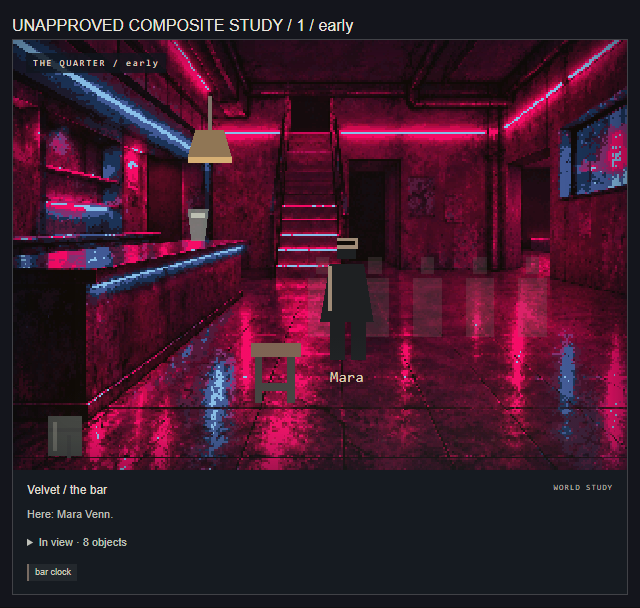
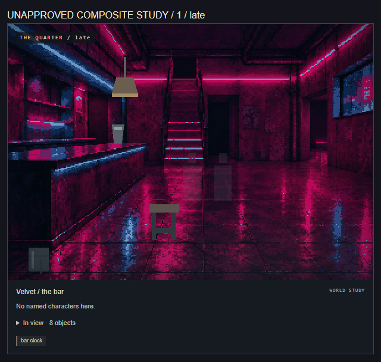
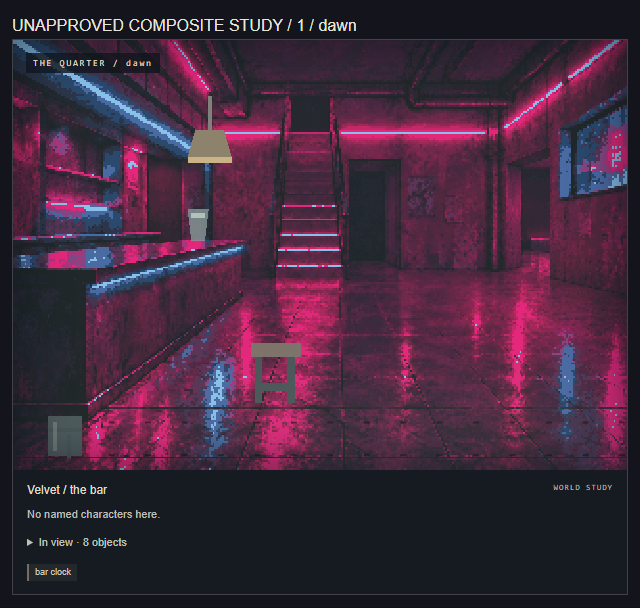
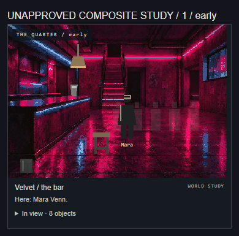

01 / 64 colours / external edit
{kind=link}

{kind=link}

{kind=link}





Control / generation settings
{
"backend": "external-reviewed-edit",
"model": null,
"seed": null,
"pixelWidth": 320,
"displayWidth": 640,
"inferenceSeconds": null
}Canonical facts
- One staircase beside the salon; main floor toward a small stage
- High street-facing window
- Fixed bar counter, bare surface
- Fixed bottle shelving, no loose cups or readable labels
Routes: vestibule, street, landing, kitchen, stage, salon, archive
Review criteria and provenance
{
"sourceType": "external-reviewed-edit",
"architectureReviewState": "pending-human-review",
"framing": {
"method": "explicit-crop",
"crop": [
4,
0,
1444,
1008
],
"orientedSourceDimensions": [
1448,
1086
],
"framedDimensions": [
1440,
1008
],
"notes": "Same reviewed [4,0,1444,1008] crop as parent: four pixels from each side and 78 bottom floor pixels. Checked the corrected east threshold and distant stage remain fully inside frame. No stretch, canvas extension or camera change.",
"orientation": "EXIF transpose before coordinates; original bytes retained"
},
"generationSettings": {
"operation": "pixel-processing-only",
"width": 1440,
"height": 1008,
"pixelWidth": 320,
"displayWidth": 640,
"colors": 64,
"contrast": 1.15,
"resampling": "nearest-neighbour",
"quantization": "Pillow MEDIANCUT",
"pillowVersion": "12.3.0"
},
"environment": null,
"requiredFacts": [
"One stable room identity across all time bands; preserve established exit relationships.",
"Leave named characters, stateful doors and movable objects to runtime layers.",
"Keep overlay placement zones usable at desktop and mobile sizes.",
"One staircase beside the salon; main floor toward a small stage",
"High street-facing window",
"Fixed bar counter, bare surface",
"Fixed bottle shelving, no loose cups or readable labels",
"One canonical image across the night; no time-specific architecture variants.",
"Human must check all exits, staircase count, fixed placement and overlay composition."
],
"forbiddenFacts": [
"Extra staircases, balconies, fireplaces or gameplay-significant exits absent from the world reference.",
"Named NPCs, evidence, player belongings, readable story text, temporary damage or changing plot props baked into architecture.",
"Invented booth seating or altered window placement not supported by this room's reference.",
"Explicit sexual activity, nudity, minors, branded logos or hidden mystery facts."
],
"conditioning": {
"mode": "external-edit",
"reference": null,
"mask": null,
"layout": null
},
"structurePreservation": null,
"provenance": {
"origin": "external-reviewed-edit",
"editor": "Codex directing built-in image_gen",
"service": "Built-in image_gen image editing; underlying model/version not exposed",
"notes": "One architecture-only correction after checkpoint bbb7693f0f6632a1a8dabbc1a24c43a805a64ee2. Removed false rear panel, far-left glazing, three discrete shades and in-room platform; restored existing east opening with distant small stage. Image 2 was geometry reference docs/visuals/velvet-bar-layout/reference.png, SHA256 b836b6374e0e3fa9d9852b8eb42fc3f43f83b19a4f60a6f5ebf2b05c7be77ea8; it was not a style reference. The actual request and input roles are retained in edit-context.json. No human architecture approval or hard pixel-preservation claim.",
"modelVersion": null,
"sourceCreatedAt": null,
"parentSource": {
"file": "provenance/parent-source.png",
"sha256": "af70facbd4f79b75cca2160b9ff0cb5514d5560d952fe5e66a9114ee4602cd6c",
"bytes": 2349328
},
"editPrompt": "Use case: precise-object-edit.\nAsset type: FREAK//CITY Velvet Bar canonical-room draft, ARCHITECTURE CORRECTION ONLY.\nInput Image 1 is the EDIT TARGET: the rich magenta/cyan 1448x1086 room with empty shelving. Preserve its aesthetic and material richness exactly.\nInput Image 2 is GEOMETRY REFERENCE ONLY: a crude blockout showing the east opening with a tiny distant stage edge. Do NOT copy its flat surfaces, low detail, palette, counter shape, or camera. Apply only the four localized corrections below to Image 1.\n\nA. EAST STAGE RELATIONSHIP: The low bench/platform currently running along the interior right wall is wrong. Remove this entire in-room platform (approximately x1165..1448, y515..622) and continue the existing wall-to-floor junction and original floor tiles where it was. In the RIGHT SIDE WALL near its REAR corner, to the LEFT/rear of the existing high right window, create exactly ONE open, unglazed, doorless passage to the already established adjoining small stage space. Approximate correction zone x1150..1280, y285..585 in Image 1; fit the opening naturally to that right wall's existing perspective. It must turn east through the SIDE wall, not be another opening on the rear wall. Through that opening show ONLY a modest, distant, very low stage edge recessed BEYOND the threshold, with its dim magenta material reflection. Keep that stage wholly inside the adjoining space, with open floor to the passage. No stage or bench projects into the main bar; no wide performance hall, grand proscenium, extra stairs, curtains, equipment or people. This passage represents the existing east/stage route, not a newly invented exit. Keep the high right window in precisely its current position, dimensions and shape.\n\nB. FALSE REAR DOOR PANEL: On the REAR wall immediately LEFT of the central stair, approximately x502..597,y312..545, remove the tall rectangular door-like panel and its frame/seams. Fill with seamless worn magenta/black opaque wall plaster matching its neighbours. Do not turn it into another dark recess, door, window or niche. Do NOT change the real dark salon opening immediately RIGHT of the stair. Preserve the dark west-side service recess behind the bar.\n\nC. FALSE LEFT GLAZING: At the extreme LEFT image edge behind/alongside the shelving, approximately x0..52,y287..411, replace the bright rectangular blue glass/window/mirror inset with opaque continuous grungy wall matching the existing shelving wall, still catching cyan spill. Remove the glazed rectangle/frame/reflected exterior appearance. Preserve every empty shelf, their placement and cyan/magenta reflected light. Do not fill any actual dark service opening or add bottles.\n\nD. DISCRETE LAMPS: Remove the three small shaded hanging/wall lamp objects: cyan-topped lamp above left shelving near x123,y201; small magenta shaded lamp over left rear recess near x352,y277; small magenta wall lamp near x1191,y272 (the east-opening region). Heal only their mounts/shades into the existing wall/beam. Retain the surrounding mood and light spill. Keep ALL existing integrated linear cyan/magenta neon strips, stair-edge illumination, their brightness relationships and floor reflections: these are part of the locked visual language. Do not add a replacement pendant; the actual game's single pendant will be a runtime overlay.\n\nINVARIANTS: same exact 4:3 framing, ideally same 1448x1086 pixels; same camera, perspective and ceiling; exactly one unchanged central staircase, upper opening, tread count, rails and footprint; same dark salon opening immediately to its right; same left fixed counter footprint, silhouette and bare surface; same empty shelving; same high right window; same broad open central floor, tile perspective, rich glossy reflections, grime, texture detail, saturated magenta/cyan relationship and deep shadows. Change only the four identified regions. No global smoothing, repainting, recolouring, relighting, compositional shift or crop. This is a local repair of a successful room.\nDo not add people, stools, bottles, faucets, loose props, signs, text, logos, a second stair, extra windows, unsupported doors or exits, balconies, mezzanines, booths, or different architecture elsewhere. The east/stage passage is the ONLY opening being restored.\n",
"modelExecutedDuringImport": false
}
}